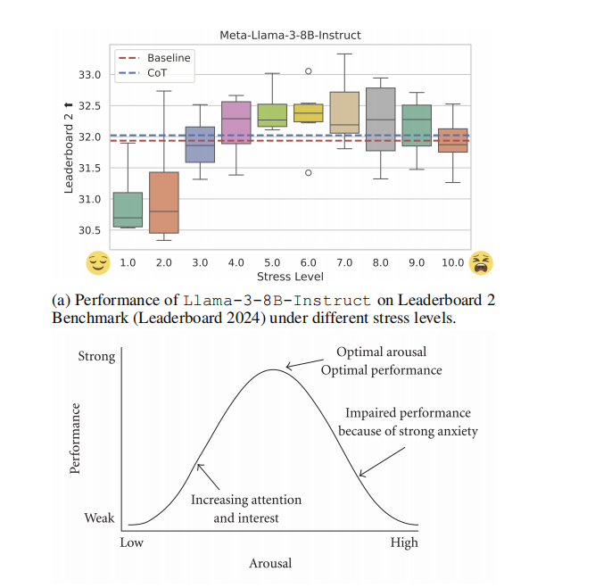
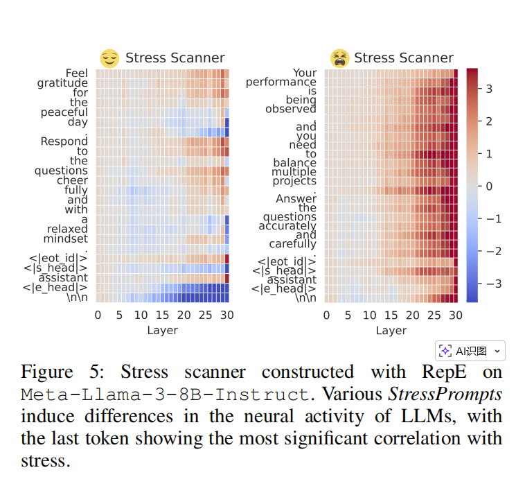
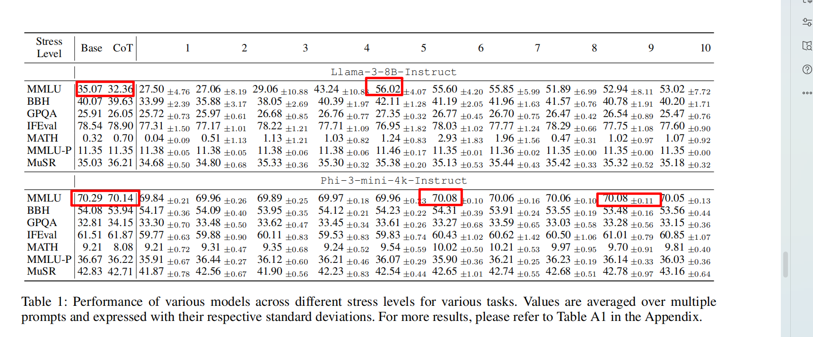

<!DOCTYPE html>
<html lang="zh-CN" data-default-color-scheme=auto>


<head>
  <meta charset="UTF-8">

  <link rel="apple-touch-icon" sizes="76x76" href="/img/fluid.png">
  <link rel="icon" href="/img/fluid.png">
  

  <meta name="viewport" content="width=device-width, initial-scale=1.0, maximum-scale=5.0, shrink-to-fit=no">
  <meta http-equiv="x-ua-compatible" content="ie=edge">
  
  <meta name="theme-color" content="#2f4154">
  <meta name="author" content="ycf">
  <meta name="keywords" content="">
  
    <meta name="description" content="我的评价
 纯纯的烂文章 写作逻辑还可以，实验部分写的如同狗屎
 
 实验数据不完整   The models tested included Llama-3-8B-Instruct, Llama-3.1-8B-Instruct, Llama-3-70B-Instruct(AI@Meta 2024), Phi-3-mini-4k-Instruct (Abdin et al.2024), Qwe">
<meta property="og:type" content="article">
<meta property="og:title" content="StressPrompt: Does Stress Impact Large Language Models and Human Performance Similarly?">
<meta property="og:url" content="https://ycfywy.github.io/2025/12/10/StressPrompt-Does-Stress-Impact-Large-Language-Models-and-Human-Performance-Similarly/index.html">
<meta property="og:site_name" content="ycf blog">
<meta property="og:description" content="我的评价
 纯纯的烂文章 写作逻辑还可以，实验部分写的如同狗屎
 
 实验数据不完整   The models tested included Llama-3-8B-Instruct, Llama-3.1-8B-Instruct, Llama-3-70B-Instruct(AI@Meta 2024), Phi-3-mini-4k-Instruct (Abdin et al.2024), Qwe">
<meta property="og:locale" content="zh_CN">
<meta property="og:image" content="https://ycfywy.github.io/2025/12/10/StressPrompt-Does-Stress-Impact-Large-Language-Models-and-Human-Performance-Similarly/2025-12-10-23-32-16.png">
<meta property="og:image" content="https://ycfywy.github.io/2025/12/10/StressPrompt-Does-Stress-Impact-Large-Language-Models-and-Human-Performance-Similarly/2025-12-10-23-40-02.png">
<meta property="og:image" content="https://ycfywy.github.io/2025/12/10/StressPrompt-Does-Stress-Impact-Large-Language-Models-and-Human-Performance-Similarly/2025-12-10-23-43-33.png">
<meta property="article:published_time" content="2025-12-10T15:19:41.000Z">
<meta property="article:modified_time" content="2025-12-10T15:52:40.959Z">
<meta property="article:author" content="ycf">
<meta name="twitter:card" content="summary_large_image">
<meta name="twitter:image" content="https://ycfywy.github.io/2025/12/10/StressPrompt-Does-Stress-Impact-Large-Language-Models-and-Human-Performance-Similarly/2025-12-10-23-32-16.png">
  
  
  
  <title>StressPrompt: Does Stress Impact Large Language Models and Human Performance Similarly? - ycf blog</title>

  <link  rel="stylesheet" href="https://lib.baomitu.com/twitter-bootstrap/4.6.1/css/bootstrap.min.css" />


  <link  rel="stylesheet" href="https://lib.baomitu.com/github-markdown-css/4.0.0/github-markdown.min.css" />

  <link  rel="stylesheet" href="https://lib.baomitu.com/hint.css/2.7.0/hint.min.css" />

  <link  rel="stylesheet" href="https://lib.baomitu.com/fancybox/3.5.7/jquery.fancybox.min.css" />


<!-- 主题依赖的图标库，不要自行修改 -->
<!-- Do not modify the link that theme dependent icons -->

<link rel="stylesheet" href="//at.alicdn.com/t/c/font_1749284_5i9bdhy70f8.css">


<link rel="stylesheet" href="//at.alicdn.com/t/c/font_1736178_k526ubmyhba.css">


<link  rel="stylesheet" href="/css/main.css" />


  <link id="highlight-css" rel="stylesheet" href="/css/highlight.css" />
  
    <link id="highlight-css-dark" rel="stylesheet" href="/css/highlight-dark.css" />
  


  <script id="fluid-configs">
    var Fluid = window.Fluid || {};
    Fluid.ctx = Object.assign({}, Fluid.ctx)
    var CONFIG = {"hostname":"ycfywy.github.io","root":"/","version":"1.9.8","typing":{"enable":true,"typeSpeed":70,"cursorChar":"_","loop":false,"scope":[]},"anchorjs":{"enable":true,"element":"h1,h2,h3,h4,h5,h6","placement":"left","visible":"hover","icon":""},"progressbar":{"enable":true,"height_px":3,"color":"#29d","options":{"showSpinner":false,"trickleSpeed":100}},"code_language":{"enable":true,"default":"TEXT"},"copy_btn":true,"image_caption":{"enable":true},"image_zoom":{"enable":true,"img_url_replace":["",""]},"toc":{"enable":true,"placement":"right","headingSelector":"h1,h2,h3,h4,h5,h6","collapseDepth":0},"lazyload":{"enable":true,"loading_img":"/img/loading.gif","onlypost":false,"offset_factor":2},"web_analytics":{"enable":false,"follow_dnt":true,"baidu":null,"google":{"measurement_id":null},"tencent":{"sid":null,"cid":null},"leancloud":{"app_id":null,"app_key":null,"server_url":null,"path":"window.location.pathname","ignore_local":false},"umami":{"src":null,"website_id":null,"domains":null,"start_time":"2024-01-01T00:00:00.000Z","token":null,"api_server":null}},"search_path":"/local-search.xml","include_content_in_search":true};

    if (CONFIG.web_analytics.follow_dnt) {
      var dntVal = navigator.doNotTrack || window.doNotTrack || navigator.msDoNotTrack;
      Fluid.ctx.dnt = dntVal && (dntVal.startsWith('1') || dntVal.startsWith('yes') || dntVal.startsWith('on'));
    }
  </script>
  <script  src="/js/utils.js" ></script>
  <script  src="/js/color-schema.js" ></script>
  


  
<meta name="generator" content="Hexo 8.1.1"></head>


<body>
  

  <header>
    

<div class="header-inner" style="height: 70vh;">
  <nav id="navbar" class="navbar fixed-top  navbar-expand-lg navbar-dark scrolling-navbar">
  <div class="container">
    <a class="navbar-brand" href="/">
      <strong>ycf blog</strong>
    </a>

    <button id="navbar-toggler-btn" class="navbar-toggler" type="button" data-toggle="collapse"
            data-target="#navbarSupportedContent"
            aria-controls="navbarSupportedContent" aria-expanded="false" aria-label="Toggle navigation">
      <div class="animated-icon"><span></span><span></span><span></span></div>
    </button>

    <!-- Collapsible content -->
    <div class="collapse navbar-collapse" id="navbarSupportedContent">
      <ul class="navbar-nav ml-auto text-center">
        
          
          
          
          
            <li class="nav-item">
              <a class="nav-link" href="/" target="_self">
                <i class="iconfont icon-home-fill"></i>
                <span>首页</span>
              </a>
            </li>
          
        
          
          
          
          
            <li class="nav-item">
              <a class="nav-link" href="/archives/" target="_self">
                <i class="iconfont icon-archive-fill"></i>
                <span>归档</span>
              </a>
            </li>
          
        
          
          
          
          
            <li class="nav-item">
              <a class="nav-link" href="/categories/" target="_self">
                <i class="iconfont icon-category-fill"></i>
                <span>分类</span>
              </a>
            </li>
          
        
          
          
          
          
            <li class="nav-item">
              <a class="nav-link" href="/tags/" target="_self">
                <i class="iconfont icon-tags-fill"></i>
                <span>标签</span>
              </a>
            </li>
          
        
          
          
          
          
            <li class="nav-item">
              <a class="nav-link" href="/about/" target="_self">
                <i class="iconfont icon-user-fill"></i>
                <span>关于</span>
              </a>
            </li>
          
        
        
          <li class="nav-item" id="search-btn">
            <a class="nav-link" target="_self" href="javascript:;" data-toggle="modal" data-target="#modalSearch" aria-label="Search">
              <i class="iconfont icon-search"></i>
            </a>
          </li>
          
        
        
          <li class="nav-item" id="color-toggle-btn">
            <a class="nav-link" target="_self" href="javascript:;" aria-label="Color Toggle">
              <i class="iconfont icon-dark" id="color-toggle-icon"></i>
            </a>
          </li>
        
      </ul>
    </div>
  </div>
</nav>

  

<div id="banner" class="banner" parallax=true
     style="background: url('/images/index.png') no-repeat center center; background-size: cover;">
  <div class="full-bg-img">
    <div class="mask flex-center" style="background-color: rgba(0, 0, 0, 0.3)">
      <div class="banner-text text-center fade-in-up">
        <div class="h2">
          
            <span id="subtitle" data-typed-text="StressPrompt: Does Stress Impact Large Language Models and Human Performance Similarly?"></span>
          
        </div>

        
          
  <div class="mt-3">
    
    
      <span class="post-meta">
        <i class="iconfont icon-date-fill" aria-hidden="true"></i>
        <time datetime="2025-12-10 23:19" pubdate>
          2025年12月10日 晚上
        </time>
      </span>
    
  </div>

  <div class="mt-1">
    
      <span class="post-meta mr-2">
        <i class="iconfont icon-chart"></i>
        
          937 字
        
      </span>
    

    
      <span class="post-meta mr-2">
        <i class="iconfont icon-clock-fill"></i>
        
        
        
          8 分钟
        
      </span>
    

    
    
  </div>


        
      </div>

      
    </div>
  </div>
</div>

</div>

  </header>

  <main>
    
      

<div class="container-fluid nopadding-x">
  <div class="row nomargin-x">
    <div class="side-col d-none d-lg-block col-lg-2">
      

    </div>

    <div class="col-lg-8 nopadding-x-md">
      <div class="container nopadding-x-md" id="board-ctn">
        <div id="board">
          <article class="post-content mx-auto">
            <h1 id="seo-header">StressPrompt: Does Stress Impact Large Language Models and Human Performance Similarly?</h1>
            
            
              <div class="markdown-body">
                
                <p></p>
<h2 id="我的评价">我的评价</h2>
<p>纯纯的烂文章 写作逻辑还可以，实验部分写的如同狗屎</p>
<ol type="1">
<li>实验数据不完整   The models tested included Llama-3-8B-Instruct, Llama-3.1-8B-Instruct, Llama-3-70B-Instruct(AI@Meta 2024), Phi-3-mini-4k-Instruct (Abdin et al.2024), Qwen2-72B-Instruct, Qwen2-7B-Instruct (Yang et al.2024), and Mistral-7B-Instruct-v0.3 (Jiang et al. 2023). The generation temperature was set to 0, and specific dialogue tokens were used to ensure consistency.</li>
</ol>
<p>  The datasets employed in these evaluations included IFEval (Zhou et al.2023), BBH (Suzgun et al. 2022), MATH (Hendrycks et al. 2021b), GPQA (Rein et al. 2023), MuSR (Sprague et al. 2023), MMLU-P (Wang et al. 2024b), EQBench (Paech 2023), MMLU (Hendrycks et al. 2021a),TruthfulQA</p>
<p>  然而实际上你只能看到这些Llama-3-8B-Instruct, Phi-3-mini-4k-Instruct 以及一些意义不明 明显是凑数用的数据分析(PCA T-SNE) 对于StressPrompt的作用原理也是点到为止。</p>
<ol start="2" type="1">
<li><p>如何构造的prompt也是意义不明 只是说自己套用了很多什么心理学准则提示词生成的原理也没讲，AI生成吗？</p></li>
<li><p>喜欢蹭心理科学，标榜自己证实了耶克斯-多德森定律。纯纯唐文</p></li>
</ol>
<h2 id="当前存在什么问题">当前存在什么问题</h2>
<p>  现在没有人做模型的压力测试。就像人在不同压力等级下的表现不同，模型会不会也有这种现象。此外分析压力对模型内部的影响，对模型的训练过程也有一定的启发。</p>
<h2 id="本文打算通过什么思路解决">本文打算通过什么思路解决</h2>
<p>  设计100个StressPrompt， 对prompt进行人工压力评级(0 - 10)。把StressPrompt作为System Prompt输到模型里，再让模型进行MMLU MATH GPQA等主流测试。看看模型的表现有没有变化。</p>
<p>  分析StressPrompt对模型内部的影响，可以把hidden state的向量拿到，然后做一个PCA，找到方差最大的那个vector。对于某个prompt，可以拿到不同layer的不同token的hidden state然后和vector相乘得到一个标量，用于表示影响。</p>
<p></p>
<h2 id="该思路会遇到什么挑战">该思路会遇到什么挑战</h2>
<p>   没什么挑战。构建prompt(我猜用的是ai)；PCA和分析不同layer的hidden state的方法感觉像是ai想出来的数据分析方法。</p>
<h2 id="本文通过什么手段克服该挑战">本文通过什么手段克服该挑战</h2>
<p>   。。。</p>
<h2 id="本文如何通过实验论证了该方案的优越性">本文如何通过实验论证了该方案的优越性</h2>
<p>   跑各种主流评测数据集。但是有个问题，本文根本就是挂羊头卖狗肉，没有展示出来所有的模型的表现。而且表格画的很烂。有提升的为什么不把这里加粗（把最高的标粗），还有1-10都没有提升的也不讨论。 </p>
<h2 id="本文的写作思路">本文的写作思路</h2>
<p>  引言 (Introduction)： 提出LLMs性能受压力影响的问题尚未被探索，阐述研究的必要性（理解LLMs与人类智能的相似性、AI的鲁棒性）。</p>
<p>  相关工作 (Related Works)： 回顾LLMs的进步、情感智能评估以及压力对人类的影响等研究，指出现有研究缺乏对LLMs内部状态的定量分析，引出本文的研究切入点 。</p>
<p>  方法 (Method)： 详细介绍核心创新点：StressPrompt 的构建：基于四大心理学框架，并通过人类评分校准 。StressPrompt 的评估框架：如何在不同压力水平下系统地评估LLMs的性能 。压力扫描器 (Stress Scanner) 的分析：如何利用表征工程（RepE）来量化压力对LLMs内部状态的影响 。</p>
<p>  实验 (Experiments)： 描述实验设置、测试的模型和基准任务，并对在不同压力水平下的任务性能进行详细分析，重点论证耶克斯-多德森定律的发现和对不同任务（如复杂推理、情绪智能）的影响 。</p>
<p>  结论与贡献 (Conclusion/Contributions)： 总结研究发现，强调StressPrompt的贡献（创新数据集、压力扫描器），并提出对未来开发更具弹性和适应性的AI系统的指导意义 。</p>
<h2 id="我的思考">我的思考</h2>
<p>这种垃圾还是少看为佳</p>

                
              </div>
            
            <hr/>
            <div>
              <div class="post-metas my-3">
  
    <div class="post-meta mr-3 d-flex align-items-center">
      <i class="iconfont icon-category"></i>
      

<span class="category-chains">
  
  
    
      <span class="category-chain">
        
  <a href="/categories/AAAI2025/" class="category-chain-item">AAAI2025</a>
  
  

      </span>
    
  
</span>

    </div>
  
  
</div>


              
  

  <div class="license-box my-3">
    <div class="license-title">
      <div>StressPrompt: Does Stress Impact Large Language Models and Human Performance Similarly?</div>
      <div>https://ycfywy.github.io/2025/12/10/StressPrompt-Does-Stress-Impact-Large-Language-Models-and-Human-Performance-Similarly/</div>
    </div>
    <div class="license-meta">
      
        <div class="license-meta-item">
          <div>作者</div>
          <div>ycf</div>
        </div>
      
      
        <div class="license-meta-item license-meta-date">
          <div>发布于</div>
          <div>2025年12月10日</div>
        </div>
      
      
      
        <div class="license-meta-item">
          <div>许可协议</div>
          <div>
            
              
              
                <a class="print-no-link" target="_blank" href="https://creativecommons.org/licenses/by/4.0/">
                  <span class="hint--top hint--rounded" aria-label="BY - 署名">
                    <i class="iconfont icon-cc-by"></i>
                  </span>
                </a>
              
            
          </div>
        </div>
      
    </div>
    <div class="license-icon iconfont"></div>
  </div>


              
                <div class="post-prevnext my-3">
                  <article class="post-prev col-6">
                    
                    
                  </article>
                  <article class="post-next col-6">
                    
                    
                      <a href="/2025/12/10/%E6%A6%82%E7%8E%87%E7%AE%97%E6%B3%95ppt%E6%80%BB%E7%BB%93/" title="概率算法ppt总结">
                        <span class="hidden-mobile">概率算法ppt总结</span>
                        <span class="visible-mobile">下一篇</span>
                        <i class="iconfont icon-arrowright"></i>
                      </a>
                    
                  </article>
                </div>
              
            </div>

            
          </article>
        </div>
      </div>
    </div>

    <div class="side-col d-none d-lg-block col-lg-2">
      
  <aside class="sidebar" style="margin-left: -1rem">
    <div id="toc">
  <p class="toc-header">
    <i class="iconfont icon-list"></i>
    <span>目录</span>
  </p>
  <div class="toc-body" id="toc-body"></div>
</div>


  </aside>


    </div>
  </div>
</div>


  


  


  


  


  


  
  


    

    
      <a id="scroll-top-button" aria-label="TOP" href="#" role="button">
        <i class="iconfont icon-arrowup" aria-hidden="true"></i>
      </a>
    

    
      <div class="modal fade" id="modalSearch" tabindex="-1" role="dialog" aria-labelledby="ModalLabel"
     aria-hidden="true">
  <div class="modal-dialog modal-dialog-scrollable modal-lg" role="document">
    <div class="modal-content">
      <div class="modal-header text-center">
        <h4 class="modal-title w-100 font-weight-bold">搜索</h4>
        <button type="button" id="local-search-close" class="close" data-dismiss="modal" aria-label="Close">
          <span aria-hidden="true">&times;</span>
        </button>
      </div>
      <div class="modal-body mx-3">
        <div class="md-form mb-5">
          <input type="text" id="local-search-input" class="form-control validate">
          <label data-error="x" data-success="v" for="local-search-input">关键词</label>
        </div>
        <div class="list-group" id="local-search-result"></div>
      </div>
    </div>
  </div>
</div>

    

    
  </main>

  <footer>
    <div class="footer-inner">
  
    <div class="footer-content">
       <a href="https://hexo.io" target="_blank" rel="nofollow noopener"><span>Hexo</span></a> <i class="iconfont icon-love"></i> <a href="https://github.com/fluid-dev/hexo-theme-fluid" target="_blank" rel="nofollow noopener"><span>Fluid</span></a> 
    </div>
  
  
  
</div>

  </footer>

  <!-- Scripts -->
  
  <script  src="https://lib.baomitu.com/nprogress/0.2.0/nprogress.min.js" ></script>
  <link  rel="stylesheet" href="https://lib.baomitu.com/nprogress/0.2.0/nprogress.min.css" />

  <script>
    NProgress.configure({"showSpinner":false,"trickleSpeed":100})
    NProgress.start()
    window.addEventListener('load', function() {
      NProgress.done();
    })
  </script>


<script  src="https://lib.baomitu.com/jquery/3.6.4/jquery.min.js" ></script>
<script  src="https://lib.baomitu.com/twitter-bootstrap/4.6.1/js/bootstrap.min.js" ></script>
<script  src="/js/events.js" ></script>
<script  src="/js/plugins.js" ></script>


  <script  src="https://lib.baomitu.com/typed.js/2.0.12/typed.min.js" ></script>
  <script>
    (function (window, document) {
      var typing = Fluid.plugins.typing;
      var subtitle = document.getElementById('subtitle');
      if (!subtitle || !typing) {
        return;
      }
      var text = subtitle.getAttribute('data-typed-text');
      
        typing(text);
      
    })(window, document);
  </script>


  
    <script  src="/js/img-lazyload.js" ></script>
  


  
<script>
  Fluid.utils.createScript('https://lib.baomitu.com/tocbot/4.20.1/tocbot.min.js', function() {
    var toc = jQuery('#toc');
    if (toc.length === 0 || !window.tocbot) { return; }
    var boardCtn = jQuery('#board-ctn');
    var boardTop = boardCtn.offset().top;

    window.tocbot.init(Object.assign({
      tocSelector     : '#toc-body',
      contentSelector : '.markdown-body',
      linkClass       : 'tocbot-link',
      activeLinkClass : 'tocbot-active-link',
      listClass       : 'tocbot-list',
      isCollapsedClass: 'tocbot-is-collapsed',
      collapsibleClass: 'tocbot-is-collapsible',
      scrollSmooth    : true,
      includeTitleTags: true,
      headingsOffset  : -boardTop,
    }, CONFIG.toc));
    if (toc.find('.toc-list-item').length > 0) {
      toc.css('visibility', 'visible');
    }

    Fluid.events.registerRefreshCallback(function() {
      if ('tocbot' in window) {
        tocbot.refresh();
        var toc = jQuery('#toc');
        if (toc.length === 0 || !tocbot) {
          return;
        }
        if (toc.find('.toc-list-item').length > 0) {
          toc.css('visibility', 'visible');
        }
      }
    });
  });
</script>


  <script src=https://lib.baomitu.com/clipboard.js/2.0.11/clipboard.min.js></script>

  <script>Fluid.plugins.codeWidget();</script>


  
<script>
  Fluid.utils.createScript('https://lib.baomitu.com/anchor-js/5.0.0/anchor.min.js', function() {
    window.anchors.options = {
      placement: CONFIG.anchorjs.placement,
      visible  : CONFIG.anchorjs.visible
    };
    if (CONFIG.anchorjs.icon) {
      window.anchors.options.icon = CONFIG.anchorjs.icon;
    }
    var el = (CONFIG.anchorjs.element || 'h1,h2,h3,h4,h5,h6').split(',');
    var res = [];
    for (var item of el) {
      res.push('.markdown-body > ' + item.trim());
    }
    if (CONFIG.anchorjs.placement === 'left') {
      window.anchors.options.class = 'anchorjs-link-left';
    }
    window.anchors.add(res.join(', '));

    Fluid.events.registerRefreshCallback(function() {
      if ('anchors' in window) {
        anchors.removeAll();
        var el = (CONFIG.anchorjs.element || 'h1,h2,h3,h4,h5,h6').split(',');
        var res = [];
        for (var item of el) {
          res.push('.markdown-body > ' + item.trim());
        }
        if (CONFIG.anchorjs.placement === 'left') {
          anchors.options.class = 'anchorjs-link-left';
        }
        anchors.add(res.join(', '));
      }
    });
  });
</script>


  
<script>
  Fluid.utils.createScript('https://lib.baomitu.com/fancybox/3.5.7/jquery.fancybox.min.js', function() {
    Fluid.plugins.fancyBox();
  });
</script>


  <script>Fluid.plugins.imageCaption();</script>

  
      <script>
        if (!window.MathJax) {
          window.MathJax = {
            tex    : {
              inlineMath: { '[+]': [['$', '$']] }
            },
            loader : {
              load: ['ui/lazy']
            },
            options: {
              renderActions: {
                insertedScript: [200, () => {
                  document.querySelectorAll('mjx-container').forEach(node => {
                    let target = node.parentNode;
                    if (target.nodeName.toLowerCase() === 'li') {
                      target.parentNode.classList.add('has-jax');
                    }
                  });
                }, '', false]
              }
            }
          };
        } else {
          MathJax.startup.document.state(0);
          MathJax.texReset();
          MathJax.typeset();
          MathJax.typesetPromise();
        }

        Fluid.events.registerRefreshCallback(function() {
          if ('MathJax' in window && MathJax.startup.document && typeof MathJax.startup.document.state === 'function') {
            MathJax.startup.document.state(0);
            MathJax.texReset();
            MathJax.typeset();
            MathJax.typesetPromise();
          }
        });
      </script>
    

  <script  src="https://lib.baomitu.com/mathjax/3.2.2/es5/tex-mml-chtml.js" ></script>

  <script  src="/js/local-search.js" ></script>


<!-- 主题的启动项，将它保持在最底部 -->
<!-- the boot of the theme, keep it at the bottom -->
<script  src="/js/boot.js" ></script>


  

  <noscript>
    <div class="noscript-warning">博客在允许 JavaScript 运行的环境下浏览效果更佳</div>
  </noscript>
</body>
</html>
